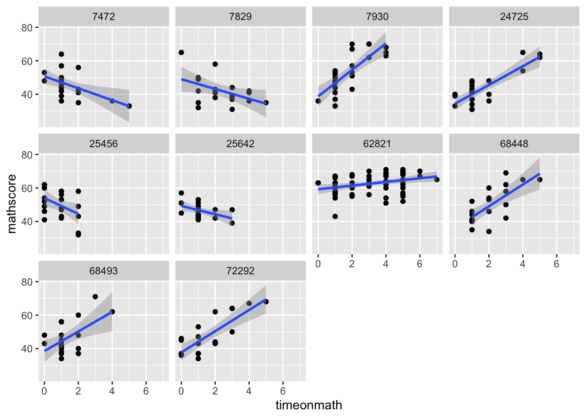
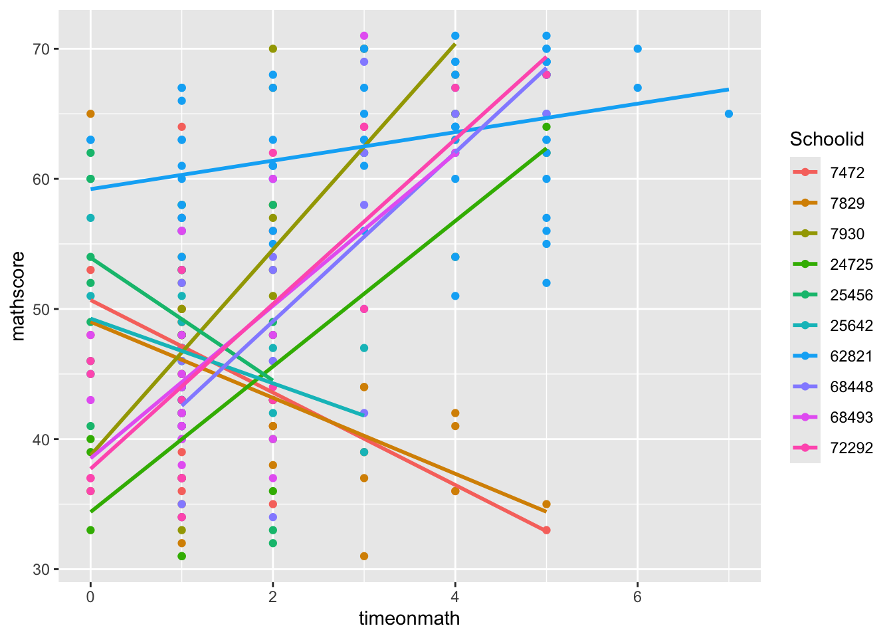
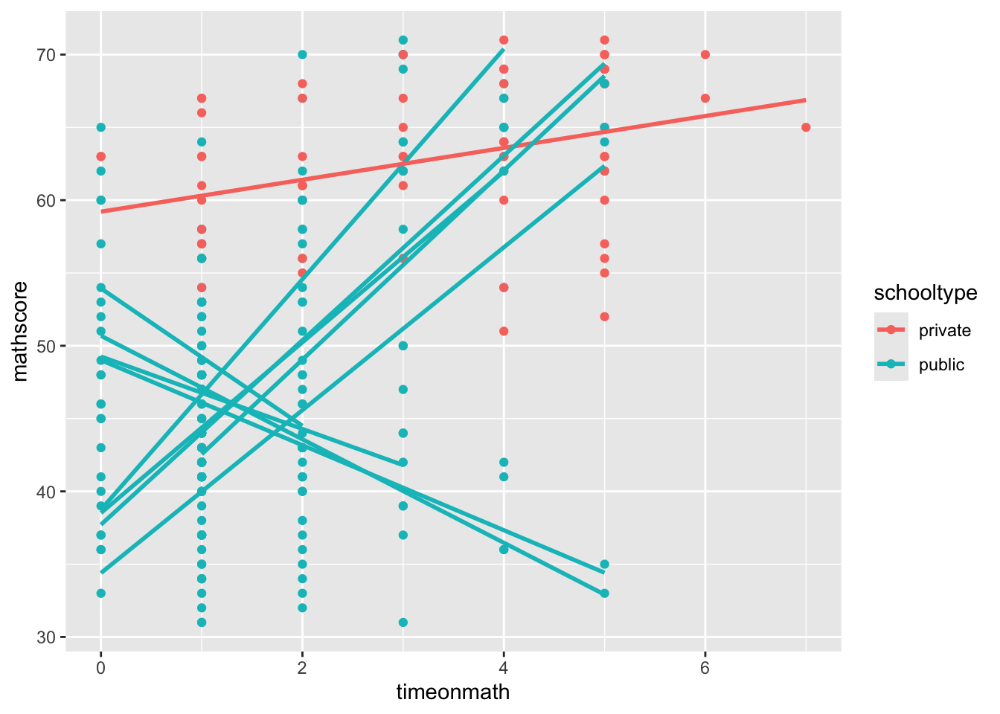

library(tidyverse)Warning: package 'ggplot2' was built under R version 4.5.2In today’s lab, we will work through a set of analyses that will:
For today’s lab, you will only need tidyverse!
library(tidyverse)Warning: package 'ggplot2' was built under R version 4.5.2Today’s dataset examines the effect of time spent on math homework on math achievement scores.
Today’s dataset is called NELS88.csv. Let’s read it in and name it nels.
nels <- read_csv("data/NELS88.csv")View() to examine the full datasetstr() to look at the structure of the datahead() to look at the first few rows of the dataView(nels)
str(nels)spc_tbl_ [260 × 15] (S3: spec_tbl_df/tbl_df/tbl/data.frame)
$ Schoolid : num [1:260] 7472 7472 7472 7472 7472 ...
$ studentid : num [1:260] 3 8 13 17 27 28 30 36 37 42 ...
$ sex : num [1:260] 2 1 1 1 2 2 2 1 2 2 ...
$ race : num [1:260] 4 4 4 4 4 4 4 4 4 4 ...
$ timeonmath : num [1:260] 1 0 0 1 2 1 5 1 1 2 ...
$ schooltype : chr [1:260] "public" "public" "public" "public" ...
$ ses : num [1:260] -0.13 -0.39 -0.8 -0.72 -0.74 -0.58 -0.83 -0.51 -0.56 0.21 ...
$ parented : num [1:260] 2 2 2 2 2 2 2 3 2 3 ...
$ mathscore : num [1:260] 48 48 53 42 43 57 33 64 36 56 ...
$ classstruct : num [1:260] 2 2 2 2 2 2 2 2 2 2 ...
$ schoolsize : num [1:260] 3 3 3 3 3 3 3 3 3 3 ...
$ urbanicity : num [1:260] 2 2 2 2 2 2 2 2 2 2 ...
$ geography : num [1:260] 2 2 2 2 2 2 2 2 2 2 ...
$ percentminority: num [1:260] 0 0 0 0 0 0 0 0 0 0 ...
$ stuteachratio : num [1:260] 19 19 19 19 19 19 19 19 19 19 ...
- attr(*, "spec")=
.. cols(
.. Schoolid = col_double(),
.. studentid = col_double(),
.. sex = col_double(),
.. race = col_double(),
.. timeonmath = col_double(),
.. schooltype = col_character(),
.. ses = col_double(),
.. parented = col_double(),
.. mathscore = col_double(),
.. classstruct = col_double(),
.. schoolsize = col_double(),
.. urbanicity = col_double(),
.. geography = col_double(),
.. percentminority = col_double(),
.. stuteachratio = col_double()
.. )
- attr(*, "problems")=<externalptr> head(nels)# A tibble: 6 × 15
Schoolid studentid sex race timeonmath schooltype ses parented mathscore
<dbl> <dbl> <dbl> <dbl> <dbl> <chr> <dbl> <dbl> <dbl>
1 7472 3 2 4 1 public -0.13 2 48
2 7472 8 1 4 0 public -0.39 2 48
3 7472 13 1 4 0 public -0.8 2 53
4 7472 17 1 4 1 public -0.72 2 42
5 7472 27 2 4 2 public -0.74 2 43
6 7472 28 2 4 1 public -0.58 2 57
# ℹ 6 more variables: classstruct <dbl>, schoolsize <dbl>, urbanicity <dbl>,
# geography <dbl>, percentminority <dbl>, stuteachratio <dbl>As we discussed in lecture on Tuesday, the world we live in is highly interdependent.
Question: What kind of clustering might we have in these data?
nels <- nels %>%
mutate(Schoolid = as.factor(Schoolid))In classical analyses (e.g., ANOVA), we often aggregate to the group level (e.g., calculate a mean that averages across all trials for a participant). While disaggregated analyses allow us to keep all of the data that we collect, they may also ignore potential clustering in the data.
Aggregation: Ignores within-level data (discards within-group variability)
Disaggregation: Ignores group-level data (discards between-group variability)
Disaggregation: Estimate a disaggregated model predicting math achievement from time spent on math homework each week. Since disaggregation ignores group-level data, we will not use the schoolid variable in our regression model.
# students: run the disaggregated model
# disag <- lm(XXX ~ XXX, data=nels)
disag <- lm(mathscore ~ timeonmath, data=nels)
summary(disag)
Call:
lm(formula = mathscore ~ timeonmath, data = nels)
Residuals:
Min 1Q Median 3Q Max
-28.9331 -6.6457 0.3543 7.0669 20.9261
Coefficients:
Estimate Std. Error t value Pr(>|t|)
(Intercept) 44.0739 0.9886 44.58 <2e-16 ***
timeonmath 3.5719 0.3882 9.20 <2e-16 ***
---
Signif. codes: 0 '***' 0.001 '**' 0.01 '*' 0.05 '.' 0.1 ' ' 1
Residual standard error: 9.682 on 258 degrees of freedom
Multiple R-squared: 0.247, Adjusted R-squared: 0.2441
F-statistic: 84.64 on 1 and 258 DF, p-value: < 2.2e-16anova(disag)Analysis of Variance Table
Response: mathscore
Df Sum Sq Mean Sq F value Pr(>F)
timeonmath 1 7933.8 7933.8 84.644 < 2.2e-16 ***
Residuals 258 24182.8 93.7
---
Signif. codes: 0 '***' 0.001 '**' 0.01 '*' 0.05 '.' 0.1 ' ' 1Question: What do the results suggest?
Question: What is the problem with conducting the analysis in this manner?
Aggregation: Estimate an aggregated model predicting mean math achievement from mean hours spent on homework each week. Since aggregation ignores individual-level data, we need to compute the mean math score and the mean time spent on math homework for each of the 10 schools.
#First, get the average math score and time on math for each school
# students: use `group_by` and `summarise()` to generate a new dataset with these values
# nelsagg <- nels %>%
# group_by(XXX) %>%
# summarise(mathagg = mean(XXX, na.rm = TRUE),
# timeagg = mean(XXX, na.rm = TRUE))
nelsagg <- nels %>%
group_by(Schoolid) %>%
summarise(mathagg = mean(mathscore, na.rm = TRUE),
timeagg = mean(timeonmath, na.rm = TRUE))
# Now, using the aggregated data, run the model
agg <- lm(mathagg ~ timeagg, data=nelsagg)
summary(agg)
Call:
lm(formula = mathagg ~ timeagg, data = nelsagg)
Residuals:
Min 1Q Median 3Q Max
-9.575 -1.105 -0.233 3.237 6.370
Coefficients:
Estimate Std. Error t value Pr(>|t|)
(Intercept) 40.018 4.530 8.834 2.12e-05 ***
timeagg 4.982 2.415 2.063 0.0731 .
---
Signif. codes: 0 '***' 0.001 '**' 0.01 '*' 0.05 '.' 0.1 ' ' 1
Residual standard error: 5.048 on 8 degrees of freedom
Multiple R-squared: 0.3472, Adjusted R-squared: 0.2656
F-statistic: 4.254 on 1 and 8 DF, p-value: 0.07307anova(agg)Analysis of Variance Table
Response: mathagg
Df Sum Sq Mean Sq F value Pr(>F)
timeagg 1 108.39 108.385 4.2541 0.07307 .
Residuals 8 203.82 25.477
---
Signif. codes: 0 '***' 0.001 '**' 0.01 '*' 0.05 '.' 0.1 ' ' 1Question: What do the results suggest?
Question: What is the problem with conducting the analysis in this manner?
We might want to know how much of an effect our grouping variable (Schoolid) has on our outcome (mathscore). To assess this, we can use the ICC or intraclass correlation coefficient. The ICC is an index of within-group similarity.
Recall that:
Total Variance = Between Group Variance + Within Group Variance
The ICC is calculated as:
ICC = Between Group Variance / Total Variance
or
ICC = Between Group Variance / (Between Group Variance + Within Group Variance)
In summary, we can use the ICC to answer the question: How much of the total variance in our dependent variable can be accounted for by the grouping effect?
Question: How can we get the between-schools variability, within-schools variability, and the total variability in math achievement?
# run a one-way ANOVA predicting mathscore from Schoolid
icc_mod <- lm(mathscore ~ Schoolid, data=nels)
summary(icc_mod)
Call:
lm(formula = mathscore ~ Schoolid, data = nels)
Residuals:
Min 1Q Median 3Q Max
-20.2500 -5.7052 -0.6423 4.4909 24.6667
Coefficients:
Estimate Std. Error t value Pr(>|t|)
(Intercept) 45.7391 1.7735 25.790 < 2e-16 ***
Schoolid7829 -3.5891 2.6005 -1.380 0.16877
Schoolid7930 7.5109 2.4819 3.026 0.00273 **
Schoolid24725 -2.1937 2.5365 -0.865 0.38795
Schoolid25456 4.1245 2.5365 1.626 0.10519
Schoolid25642 0.6609 2.6005 0.254 0.79960
Schoolid62821 17.0818 2.0555 8.310 6.13e-15 ***
Schoolid68448 3.9275 2.5672 1.530 0.12730
Schoolid68493 0.5942 2.5672 0.231 0.81715
Schoolid72292 2.1109 2.6005 0.812 0.41773
---
Signif. codes: 0 '***' 0.001 '**' 0.01 '*' 0.05 '.' 0.1 ' ' 1
Residual standard error: 8.506 on 250 degrees of freedom
Multiple R-squared: 0.4369, Adjusted R-squared: 0.4166
F-statistic: 21.55 on 9 and 250 DF, p-value: < 2.2e-16icc_aov <- anova(icc_mod)
icc_aovAnalysis of Variance Table
Response: mathscore
Df Sum Sq Mean Sq F value Pr(>F)
Schoolid 9 14030 1558.95 21.549 < 2.2e-16 ***
Residuals 250 18086 72.34
---
Signif. codes: 0 '***' 0.001 '**' 0.01 '*' 0.05 '.' 0.1 ' ' 1Question: What is the sums of squares for the effect of school? How can we calculate the total sums of squares?
# extract the ss_between and ss_total
ss_b <- icc_aov[1,2]
ss_t <-(icc_aov[1,2] + icc_aov[2,2])
# calculate the ICC
# students: calculate the ICC
# ICC <- XXX/XXX
ICC <- ss_b/ss_t
ICC[1] 0.4368624# turn the ICC into a percentage
print(paste("The grouping factor accounts for", round(ICC*100, digits=2),"% of the variance in math scores."))[1] "The grouping factor accounts for 43.69 % of the variance in math scores."Question: What does this mean?
In the disaggregated model we ran above (predicting mathscore from timeonmath), we are assuming that school (the grouping variable) explains 0% of the variance in math scores. This assumes that we have 260 unique values (the number of entries in our data).
In the aggregated model, we ran above (using mathscore from timeonmath averaged for each school), we are assuming that school (the grouping variable) explains 100% of the variance in math scores (i.e., that everyone in the school has the same math score). This assumes that we have 10 unique values (the number of schools in our data).
However, the amount of unique data we have falls actually somewhere in the middle.
Because we have a high ICC for the group effect, it’s useful to visualize our data to see if they vary in slopes, intercepts, or both. This will help us understand the source of the group effect.
nels %>%
ggplot(aes(x = timeonmath, y = mathscore)) +
geom_point() +
geom_smooth(method = "lm") +
facet_wrap(~Schoolid)
nels %>%
ggplot(aes(x = timeonmath, y = mathscore, color = Schoolid)) +
geom_point() +
geom_smooth(method = "lm", se = FALSE) 
Question: From these plots, what can you say about the slopes and intercepts?
If there is real variability due to the grouping effect, we usually want to try to figure out what characteristics of the group (i.e., a school) predict its regression line (i.e., its slope and intercept) so we can say something more substantial than just “the way time spent on homework predicts math scores is different school to school”.
First, let’s run an ANOVA-style regression to see whether Schoolid improves our model fit over a model with just timeonmath.
# students: run this model (hint: we're just adding ONE additional predictor!)
# model1 <- lm(XXX, data = nels)
model1 <- lm(mathscore ~ timeonmath + Schoolid, data = nels)
summary(model1)
Call:
lm(formula = mathscore ~ timeonmath + Schoolid, data = nels)
Residuals:
Min 1Q Median 3Q Max
-20.4496 -5.0547 -0.1313 4.7138 27.8711
Coefficients:
Estimate Std. Error t value Pr(>|t|)
(Intercept) 42.7664 1.7587 24.317 < 2e-16 ***
timeonmath 2.1366 0.3836 5.570 6.60e-08 ***
Schoolid7829 -5.6375 2.4845 -2.269 0.02412 *
Schoolid7930 6.5664 2.3512 2.793 0.00563 **
Schoolid24725 -2.7173 2.3985 -1.133 0.25834
Schoolid25456 5.2519 2.4052 2.184 0.02993 *
Schoolid25642 1.1764 2.4589 0.478 0.63275
Schoolid62821 13.0068 2.0754 6.267 1.61e-09 ***
Schoolid68448 2.4235 2.4406 0.993 0.32169
Schoolid68493 0.7181 2.4258 0.296 0.76746
Schoolid72292 1.6650 2.4585 0.677 0.49888
---
Signif. codes: 0 '***' 0.001 '**' 0.01 '*' 0.05 '.' 0.1 ' ' 1
Residual standard error: 8.037 on 249 degrees of freedom
Multiple R-squared: 0.4992, Adjusted R-squared: 0.4791
F-statistic: 24.83 on 10 and 249 DF, p-value: < 2.2e-16anova(model1)Analysis of Variance Table
Response: mathscore
Df Sum Sq Mean Sq F value Pr(>F)
timeonmath 1 7933.8 7933.8 122.837 < 2.2e-16 ***
Schoolid 9 8100.4 900.0 13.935 < 2.2e-16 ***
Residuals 249 16082.4 64.6
---
Signif. codes: 0 '***' 0.001 '**' 0.01 '*' 0.05 '.' 0.1 ' ' 1Question: What does this model tell us about the impact of
Schoolidonmathscore? What does it suggest about the intercepts? …the slopes?
Question: What do I need to do to get information about the effect of
Schoolidon the slopes (i.e., the relation betweentimeonmathandmathscore)?
model2 <- lm(mathscore ~ timeonmath * Schoolid, data = nels)
summary(model2)
Call:
lm(formula = mathscore ~ timeonmath * Schoolid, data = nels)
Residuals:
Min 1Q Median 3Q Max
-17.3049 -3.4192 -0.2385 4.2495 16.8703
Coefficients:
Estimate Std. Error t value Pr(>|t|)
(Intercept) 50.6835 2.2157 22.875 < 2e-16 ***
timeonmath -3.5538 1.2523 -2.838 0.004931 **
Schoolid7829 -1.6713 3.7914 -0.441 0.659757
Schoolid7930 -11.9335 3.4121 -3.497 0.000560 ***
Schoolid24725 -16.2897 3.0526 -5.336 2.19e-07 ***
Schoolid25456 3.2551 3.0693 1.061 0.289974
Schoolid25642 -1.4246 3.4066 -0.418 0.676187
Schoolid62821 8.5267 2.8185 3.025 0.002755 **
Schoolid68448 -14.6282 3.7803 -3.870 0.000141 ***
Schoolid68493 -12.1635 3.3997 -3.578 0.000419 ***
Schoolid72292 -12.9696 3.1476 -4.121 5.21e-05 ***
timeonmath:Schoolid7829 0.6337 1.7006 0.373 0.709765
timeonmath:Schoolid7930 11.4629 1.7428 6.577 2.97e-10 ***
timeonmath:Schoolid24725 9.1465 1.5759 5.804 2.04e-08 ***
timeonmath:Schoolid25456 -1.1646 2.2340 -0.521 0.602629
timeonmath:Schoolid25642 1.0677 2.2365 0.477 0.633499
timeonmath:Schoolid62821 4.6484 1.3372 3.476 0.000603 ***
timeonmath:Schoolid68448 10.0501 1.7994 5.585 6.31e-08 ***
timeonmath:Schoolid68493 9.4138 2.0381 4.619 6.29e-06 ***
timeonmath:Schoolid72292 9.8888 1.6367 6.042 5.77e-09 ***
---
Signif. codes: 0 '***' 0.001 '**' 0.01 '*' 0.05 '.' 0.1 ' ' 1
Residual standard error: 6.564 on 240 degrees of freedom
Multiple R-squared: 0.678, Adjusted R-squared: 0.6525
F-statistic: 26.59 on 19 and 240 DF, p-value: < 2.2e-16anova(model2)Analysis of Variance Table
Response: mathscore
Df Sum Sq Mean Sq F value Pr(>F)
timeonmath 1 7933.8 7933.8 184.111 < 2.2e-16 ***
Schoolid 9 8100.4 900.0 20.886 < 2.2e-16 ***
timeonmath:Schoolid 9 5740.2 637.8 14.801 < 2.2e-16 ***
Residuals 240 10342.2 43.1
---
Signif. codes: 0 '***' 0.001 '**' 0.01 '*' 0.05 '.' 0.1 ' ' 1Question: Does
Schoolidimpact the intercepts, the slope, or both?
Now we know that there is significant between-school variance in both the intercepts and the slopes and can try to predict this variance using school-level predictors. In this dataset, we have a variable that indicates whether the school is public or private (schooltype).
First, we need to find the unique intercept and slope for each of the 10 schools.
# This script tells R to run our regression (model) for each school. It will then save the coefficents (i.e., the slopes and the intercepts) from each regression. The saved intercepts and slopes will be in the object "slopesints".
slopesints <- nels %>%
group_by(Schoolid, schooltype) %>%
summarise(
intercept = coef(lm(mathscore ~ timeonmath))[1],
slope = coef(lm(mathscore ~ timeonmath))[2]
)
# make `schooltype` a factor
slopesints <- slopesints %>%
mutate(schooltype = as.factor(schooltype))
# check out the contrasts
contrasts(slopesints$schooltype) private
public 0
private 1Now, let’s try to predict the intercepts from whether a school is public or private.
# students: run a model predicting the `intercept` from `schooltype`
# int <- lm(XXX, data=slopesints)
int <- lm(intercept ~ schooltype, data=slopesints)
summary(int)
Call:
lm(formula = intercept ~ schooltype, data = slopesints)
Residuals:
Min 1Q Median 3Q Max
-8.754 -5.232 -2.199 6.050 10.791
Coefficients:
Estimate Std. Error t value Pr(>|t|)
(Intercept) 43.147 2.478 17.41 1.21e-07 ***
schooltypeprivate 16.063 7.837 2.05 0.0745 .
---
Signif. codes: 0 '***' 0.001 '**' 0.01 '*' 0.05 '.' 0.1 ' ' 1
Residual standard error: 7.435 on 8 degrees of freedom
Multiple R-squared: 0.3443, Adjusted R-squared: 0.2624
F-statistic: 4.201 on 1 and 8 DF, p-value: 0.07455Question: What is the regression equation predicting intercept from school type?
Question: What is the expected math achievement for a private school? How about for a public school?
Question: What is the implied “time spent on homework” in this model?
Question: The effect of school type (the slope in this model) has a p value of .07. What does this mean?
Now, let’s try to predict the slopes from whether a school is public or private.
slope <- lm(slope~schooltype,data=slopesints)
summary(slope)
Call:
lm(formula = slope ~ schooltype, data = slopesints)
Residuals:
Min 1Q Median 3Q Max
-6.776 -4.869 1.768 4.159 5.852
Coefficients:
Estimate Std. Error t value Pr(>|t|)
(Intercept) 2.0572 1.7560 1.172 0.275
schooltypeprivate -0.9626 5.5530 -0.173 0.867
Residual standard error: 5.268 on 8 degrees of freedom
Multiple R-squared: 0.003742, Adjusted R-squared: -0.1208
F-statistic: 0.03005 on 1 and 8 DF, p-value: 0.8667Question: What is the regression equation predicting slope from school type?
Question: What is the relationship (slope) between time spent on homework and math achievement for a private school? How about for a public school?
For public schools, each 1 unit increase in time spent on homework corresponds to a 2.06 - 0.96 = 1.10 increase in math achievement.
Question: Is the relationship (slope) significantly different for the two types of schools?
Question: Look back at the plot. Why do you think the effect school type on the slope wasn’t significant? The lines look like there are different slopes.
Also, look what happens if I fill the lines by school type. What do you notice?
nels %>%
ggplot(aes(x = timeonmath, y = mathscore, color = schooltype, group = Schoolid)) +
geom_point() +
geom_smooth(method = "lm", se = FALSE) `geom_smooth()` using formula = 'y ~ x'
You might be asking: Why do we need multilevel models? Can we just do this slopes and intercepts as outcomes analysis?
TL;DR: Multilevel models are needed because treating slopes and intercepts as outcomes in a single-level regression ignores the hierarchical structure of the data, leading to biased estimates and incorrect standard errors; MLM addresses this by modeling nested data with random effects that capture within- and between-group variability and account for non-independence.
While the idea of intercepts and slopes being outcomes is central to understanding what MLM does, simply treating them as outcomes in a standard single-level regression wouldn’t capture the crucial aspects and benefits of running a full multilevel model. Here’s why:
Non-Independence of Errors: In hierarchical data, observations within the same group are likely to be more similar to each other than observations from different groups. This violates the assumption of independence of errors in standard regression. Treating intercepts and slopes as outcomes in a single-level model wouldn’t account for this non-independence, leading to:
Underestimated Standard Errors: This can result in inflated Type I error rates (incorrectly rejecting the null hypothesis).
Inaccurate Statistical Significance: Conclusions about the effects of predictors might be unreliable.
Ignoring Group-Level Variance: A single-level model wouldn’t explicitly model the variance between groups in their intercepts and slopes. MLM quantifies this variance, providing valuable information about the extent to which groups differ.
Pooling Data Inappropriately: Treating intercepts and slopes as outcomes in a single-level model would essentially involve estimating separate intercepts and slopes for each group without the benefits of partial pooling (also known as shrinkage) that MLM offers.
Lack of Shrinkage: MLM uses information from all groups to inform the estimates for each individual group. Groups with less data are “shrunk” towards the overall average, leading to more stable and reliable estimates, especially for groups with small sample sizes. A single-level approach wouldn’t have this borrowing of strength across groups.
Increased Number of Parameters: Estimating separate intercepts and slopes for each group in a single-level model significantly increases the number of parameters to be estimated, potentially leading to overfitting, especially with a large number of groups and small group sizes. MLM estimates variance components instead of individual group parameters, leading to a more parsimonious model.
The “Why” Behind the Variation: The core strength of MLM is its ability to explain why intercepts and slopes vary across groups by including group-level predictors. A single-level model treating intercepts and slopes as outcomes wouldn’t allow you to directly model how group characteristics (e.g., school resources, hospital size) influence these group-specific parameters.
Cross-Level Interactions: MLM allows for the examination of how group-level variables moderate the relationships between individual-level predictors and the outcome (cross-level interactions). This is impossible to model directly in a single-level framework treating intercepts and slopes as simple outcomes.
In essence, while the idea of intercepts and slopes varying across groups is the foundation of MLM, simply trying to estimate separate intercepts and slopes for each group in a standard regression ignores the fundamental principles of hierarchical data analysis, leading to statistical problems and a loss of valuable insights into the group-level influences.
MLM provides a statistically rigorous and conceptually sound framework for simultaneously modeling individual-level relationships and the variation and predictors of group-level intercepts and slopes, while accounting for the non-independence of data within groups. It’s not just about seeing intercepts and slopes as outcomes; it’s about modeling the structure of that variation.